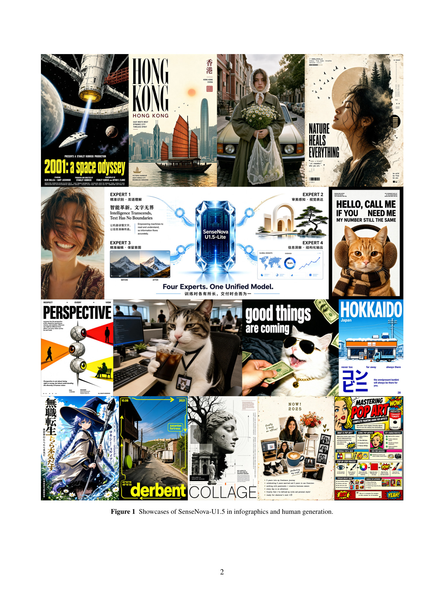
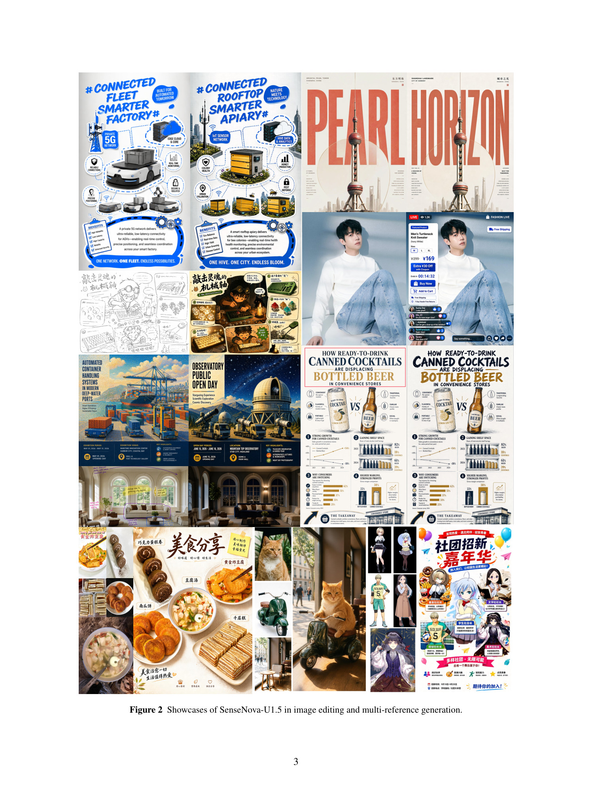
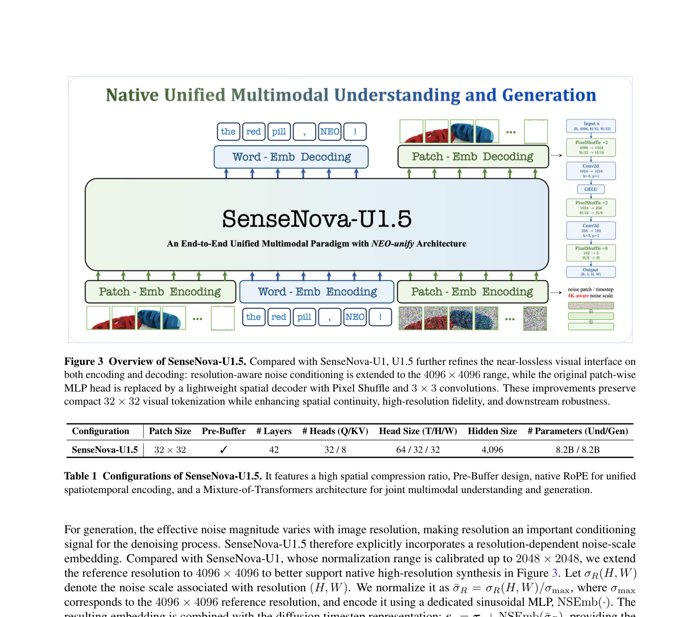
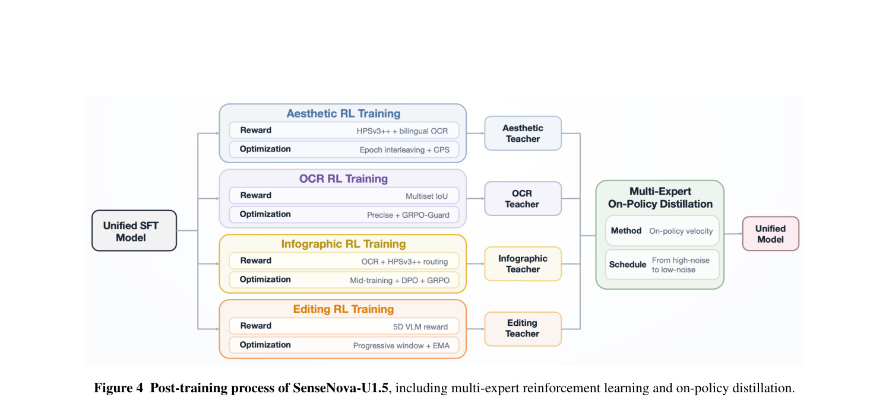
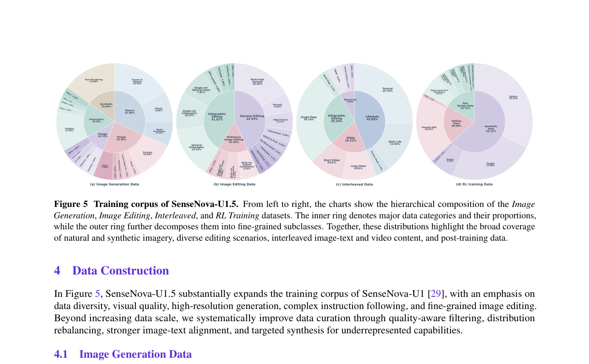
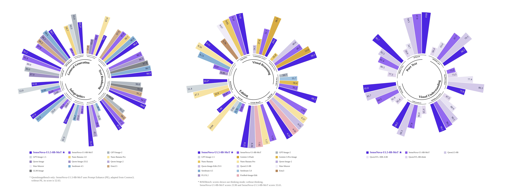
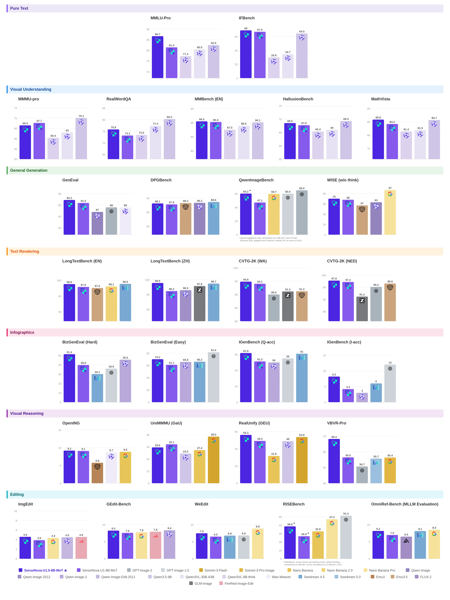
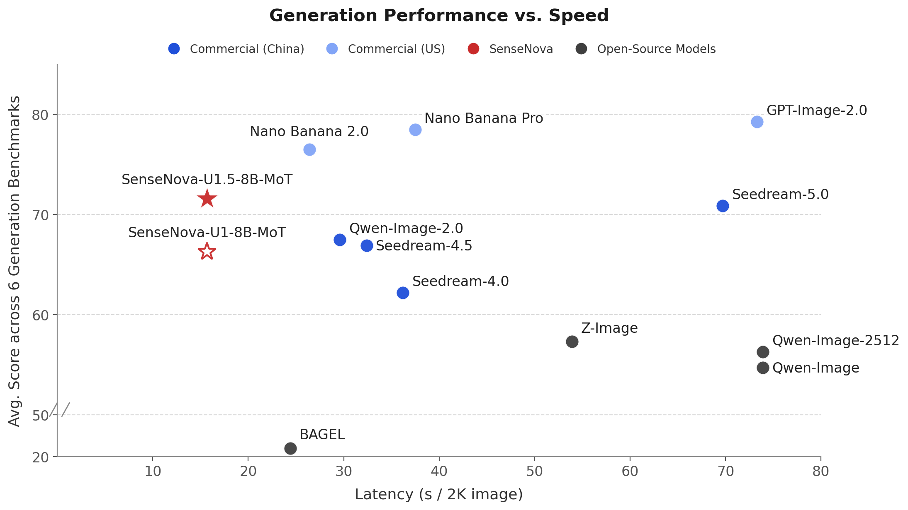

概览：它到底是什么
一句话：一个 8B 级、端到端、以像素与词元为原生输入的统一多模态基座，把「看懂」和「画出来」放进同一套表征里。
统一多模态的价值不在于「少了一个 VAE」这种架构简化，而在于能力交互：推理能改善视觉内容的创造与改写，生成本身也能成为解题的中间表征。U1.5 的数据显示，紧凑的共享视觉表征同时支撑了强理解、高保真生成、编辑与推理密集型任务。
1.1 模型身份卡
sensenova/SenseNova-U1.5-8B-MoTSenseNova-U1.5-8B-MoT-SFT（SFT 阶段）<img>/</img> 界定视觉块1.2 版本脉络：从 NEO 到 U1.5
| 时间 | 节点 | 关键内容 |
|---|---|---|
| 2026-03-05 | NEO-unify 博客 | 提出原生统一范式三支柱：近无损视觉接口、Native MoT、统一学习目标（文本自回归 + 像素流匹配）；2B 原型在 MS COCO 上取得 31.56 PSNR / 0.85 SSIM（Flux VAE 为 32.65 / 0.91） |
| 2026-04-27 | SenseNova-U1 开源 | 8B-MoT / A3B-MoT 权重与推理代码，首次把「无 VE、无 VAE」做到可用规模 |
| 2026-05-10 | U1 技术报告 | arXiv:2605.12500；补齐 A3B（38B-A3B MoE）权重 |
| 2026-05-21 | 训练代码 | 全参微调框架 sensenovalm / sensenovavl 开源 |
| 2026-07-31 | U1.5 Preview | 聚焦原生 4K、局部纹理与材质、复杂版面、编辑保真 |
| 2026-08-20 | U1.5 正式版 | 6 项用户可见提升；同步放出 LoRA-8step 加速权重与 SFT 权重 |
| 2026-09-01 | 社区 GGUF | Q8_0 量化（21.2 GB），面向低显存单卡 |
| 2026-09-11 | U1.5 技术报告 | 35 页，披露完整架构、五阶段配方、奖励建模与全部评测 |
1.3 官方主打的六项提升
构图与色彩和谐度改善，材质更真实、光照更自然，局部细节更锐利。
中英文可读性提升，海报/信息图/品牌物料的信息层级更清晰。
全局结构更连贯、色彩更稳定，高分辨率生成效率同步提高。
局部/文字/多参考/插入/替换编辑下，主体身份与未编辑区域保持更好。
物体数量、空间关系、版面、风格与多约束在一次请求内执行更一致。
通过包围框、视觉标记、单/多图参考实现区域级与物体级控制。


动机：为什么要「原生统一」
主流多模态系统的根本割裂：用预训练视觉编码器（VE）去「看」，用变分自编码器（VAE）去「画」。
2.1 双轨表征的代价
VE 的表征为语义抽象优化，VAE 的隐空间为像素保真优化，两者处在不同的表征空间。结果是与生成相关的信息必须在两套空间之间反复搬运，理解与生成难以在同一框架里协同；同时 VAE 的压缩瓶颈会限制极精细的细节还原与高分辨率稳定性。
原生统一（native unified）走另一条路：直接从像素和词元上学习，让表征空间由模型自身塑造。NEO-unify 的三根支柱是：
输入输出都不依赖外部编码器/解码器，直接在像素附近工作。
理解与生成共享注意力、但保留各自参数通路，冲突最小。
文本用自回归交叉熵，视觉用像素空间流匹配，同一优化器下共同训练。
2.2 U1 的两个遗留问题，与 U1.5 的两大改造
U1 的视觉接口极其轻量，但每个视觉 token 被独立解码成一块 RGB patch。相邻 patch 在图像成形的最后一步无法交换信息，于是高分辨率下接缝（seams）、纹理不连续、网格伪影与几何不一致被放大。
→ U1.5 改造 A：从「独立 patch 预测」改为「空间联合重建」。把 token 投到二维特征场，用空间卷积 + Pixel Shuffle 渐进上采样，让相邻区域在像素定稿前先交换信息。
视觉创作横跨美学合成、双语文字渲染、信息图设计、图像编辑等差异极大的能力，各自的奖励信号、rollout 动态与优化难点都不同。在单一策略里联合优化会让目标互相纠缠、稀释单项收益。
→ U1.5 改造 B：「先专精、再统一」（specialize-then-unify）。先用各自的数据/奖励/采样/正则训练四个 RL 专家，再用多专家在策略蒸馏（MOPD）沿学生自己的生成轨迹把能力合回单一策略。
报告最有意思的观察是：尽管生成数据中结构化格式的曝光有限，U1.5 仍能泛化到长、组合性强、高度结构化的视觉指令。这暗示多模态理解与推理阶段获得的结构知识与规划能力，可以迁移到视觉创作——统一架构不只是省钱，而是让「看懂」反过来帮「画好」。
模型架构
U1.5 保留 NEO-unify 的整体骨架，重点重做了视觉接口的「编码」与「解码」两端，并显式引入分辨率感知的条件信号。

3.1 近无损视觉接口（编码端）
- 直接把原始图像或带噪视觉输入转成紧凑 token 序列，不依赖外部视觉编码器，也不依赖 VAE。
- 两级带 GELU 的卷积投影分别下采样 ×16 与 ×2，合计每 32×32 像素区域 → 1 个视觉 token。
- 二维正弦位置编码保留空间坐标；特殊 token
<img>/</img>界定单个视觉块。 - 文本用原始语言 tokenizer 处理，视觉与文本表征投影到共享隐藏空间后由统一骨干联合处理。
32×32 的压缩比非常激进（同等分辨率下 token 数极少），这是它推理效率高、又能原生上到 4K 的直接原因；代价是必须在解码端补回局部空间交互——这正是改造 A 要解决的问题。
3.2 分辨率感知的噪声条件
生成时有效噪声幅度随图像分辨率变化，因此分辨率本身就是去噪过程的重要条件信号。U1.5 显式引入分辨率相关的噪声尺度嵌入：
- U1 的归一化范围只标定到 2048×2048，U1.5 把参考分辨率扩展到 4096×4096。
- σ̄R 经专用正弦 MLP
NSEmb(·)编码后与扩散时间步表征 τt 相加，使去噪器同时感知扩散时间与分辨率相关的噪声统计。
3.3 空间耦合解码器（改造 A 的核心）
给定骨干隐藏态 H ∈ RB×hw×d，先恢复二维拓扑 H2D ∈ RB×d×h×w，再通过上采样因子为 2、2、8 的 Pixel Shuffle 阶段渐进重建全分辨率 RGB 图。
- 相邻上采样阶段之间插入 3×3 卷积，让邻近 token 区域交换信息，patch 边界附近的像素被「联合」而非「独立」决定。
- 与骨干在流匹配目标下端到端联合训练，只带来有限额外算力。
- 效果：显著降低边界伪影，改进跨 patch 一致性与局部连续性，提升高分辨率生成与下游适配的稳定性。
这是一个「用小算子补几何」的典型设计：主干仍然在极紧凑的 token 空间里做全局建模，把局部空间交互交还给一个轻量卷积解码器。这比提高 token 密度或换回 VAE 更划算。
3.4 Native Mixture-of-Transformers（MoT）
U1.5 保留 MoT 设计：把理解与生成放进同一个 Transformer 骨干，而不是拆成两个独立网络。干净图文上下文与带噪视觉状态在同一序列里交错排列，语义表征、视觉证据与生成动态通过共享自注意力直接交互。
注意力掩码：非对称信息流
- 文本 token：只注意前文（因果语言建模）。
- 干净图像块内 token：块内双向注意，捕捉空间依赖。
- 噪声条件生成 token：在其图像块内双向交互，并可注意所有在前的干净多模态上下文。
- 反向路径被显式屏蔽：干净表征不能看到随机生成状态，保证理解/推理表征的完整性。
参数特化：共享注意力 ≠ 全共享参数
理解与生成各自保留独立的注意力投影、归一化层与前馈模块，在每一层按 token 类型动态路由。共享注意力只作为跨流通信接口，流特有参数保留感知与合成各自所需的计算。这样既能从共同表征空间获益，又不把两套优化目标强行塞进同一条计算通路。
3.5 配置与规模
| 配置 | Patch Size | Pre-Buffer | # Layers | # Heads (Q/KV) | Head Size (T/H/W) | Hidden Size | # Params (Und/Gen) |
|---|---|---|---|---|---|---|---|
| SenseNova-U1.5 | 32 × 32 | ✓ | 42 | 32 / 8 | 64 / 32 / 32 | 4,096 | 8.2B / 8.2B |
Table 1（技术报告）。高空间压缩比、Pre-Buffer 设计、统一时空编码的 native RoPE，以及用于联合多模态理解与生成的 Mixture-of-Transformers 架构。
统一训练目标
三个互补信号耦合在一个原生模型里：自回归监督建立语义理解，流匹配直接学像素空间变换，感知监督约束生成端点。
4.1 多模态理解：自回归似然
xn 为第 n 个目标 token，c 为在前的多模态上下文。
4.2 视觉生成：像素空间流匹配（x-prediction）
沿用 x-prediction 思路，直接在 RGB 空间学习流匹配。为适配不同分辨率，用分辨率自适应噪声构造训练轨迹：
4.3 感知监督：LPIPS
LPIPS 提供与 RGB 空间流目标互补的特征空间监督，改善结构一致性与局部视觉连贯。三者结合把高层语义与低层视觉成形耦合起来，使理解与生成在同一表征内被学习。
LPIPS 项是在 Stage 1 的第三阶段才引入的（权重 0.1），并在此后的统一中训与 SFT 中一直保留。前两个阶段是纯 flow matching（λAR:λFlow:λPerc = 0:1:0）。
训练配方：五阶段
Stage 1 生成预训练 → Stage 2 统一中训 → Stage 3 统一 SFT → Stage 4 能力专精（多专家 RL）→ Stage 5 多专家在策略蒸馏。
5.1 逐阶段超参与数据配比
| 训练阶段 | Stage 1 · Phase I | Stage 1 · Phase II | Stage 1 · Phase III | Stage 2 统一中训 | Stage 3 统一 SFT |
|---|---|---|---|---|---|
| 训练步数 | 180K | 100K | 185K | 80K | 10.5K |
| 峰值学习率 | 2×10⁻⁴ | 1×10⁻⁴ | 1×10⁻⁴ | 2×10⁻⁵ | 2×10⁻⁵ |
| 最低学习率 | 2×10⁻⁴ | 1×10⁻⁴ | 2×10⁻⁵ | 2×10⁻⁵ | 0 |
| LR 调度 | Constant | Constant | Cosine decay | Constant | Cosine decay |
| 序列长度 | 8,196 | 20,480 | 20,480 | 32,768 | 32,768 |
| 理解分支 | 冻结 | 冻结 | 可训练 | 可训练 | 可训练 |
| 生成分支 | 可训练 | 可训练 | 可训练 | 可训练 | 可训练 |
| λAR : λFlow : λPerc | 0 : 1 : 0 | 0 : 1 : 0 | 0.1 : 1 : 0.1 | 0.1 : 1 : 0.1 | 0.1 : 1 : 0.1 |
| 生成分辨率 | 256²–1024² | 512²–4096² | 512²–4096² | 512²–4096² | 512²–4096² |
| 理解数据 | 0.00 | 0.00 | 0.00 | 0.30 | 0.30 |
| 文生图数据 | 1.00 | 1.00 | 0.60 | 0.40 | 0.40 |
| 图像编辑数据 | 0.00 | 0.00 | 0.30 | 0.20 | 0.30 |
| 交错数据 | 0.00 | 0.00 | 0.10 | 0.10 | 0.10 |
Table 2（技术报告）。优化器全程为 AdamW（β₁ = 0.9，β₂ = 0.95，ε = 10⁻⁸）。注：Stage 3 的配比在报告表格中列为 0.30 / 0.40 / 0.30 / 0.10（合计 1.10），正文称其「与 Stage 2 任务构成相似」，疑为 0.20 之笔误，原样列出以便核对。
5.2 Stage 1：生成预训练（三段式）
- Phase I — 低分辨率打底基于已预训练的理解分支，随机初始化生成分支，在理解表征条件下做像素空间流匹配。文生图数据 256²–1024²，180K 步，常数 LR 2×10⁻⁴，序列长度 8,196。
- Phase II — 原生 4K 能力把分辨率区间扩到 512²–4096²，专门强化原生 4K 生成。100K 步，常数 LR 1×10⁻⁴，序列长度提升到 20,480。
- Phase III — 引入编辑与交错额外 185K 步，数据混合为 60% 文生图 / 30% 图像编辑 / 10% 图文交错；LR 从 1×10⁻⁴ 余弦衰减到 2×10⁻⁵，序列长度维持 20,480。从本阶段起加入权重 0.1 的 LPIPS 感知损失，并在此后所有阶段保留。
5.3 Stage 2 / Stage 3：统一中训与统一 SFT
- Stage 2（80K 步）：双分支联合优化，共享注意力做跨分支信息交换，同时保留任务特有表征。语料混合为 30% 纯文本+多模态理解 / 40% 文生图 / 20% 图像编辑 / 10% 图文交错。最大序列长度 32,768，常数 LR 2×10⁻⁵。理解损失与生成损失权重为 0.1 : 1.0——刻意压低理解权重以保护预训练理解能力，同时把优化重心给到更难生成的生成目标，从而获得稳定的联合训练。
- Stage 3（10.5K 步）：在精选高质量指令跟随数据上进一步微调，任务构成与 Stage 2 类似，LR 从 2×10⁻⁵ 余弦衰减到 0，损失系数不变。目标是强化指令遵循并把前序阶段的能力固化进统一模型。
后训练：四专家 RL + 多专家在策略蒸馏
这是 U1.5 相对 U1 的第二处结构性改造（specialize-then-unify），也是本报告篇幅最重、工程细节最多的部分。

6.1 四个专家的分工与配置
| 专家 | 奖励信号 | 采样 / 正则 | 关键超参 |
|---|---|---|---|
| 美学专家 | HPSv3++（感知质量 + 图文对齐）× 双语 OCR 奖励（PaddleOCR），按数据分区交替路由 | CPS，η = 0.7；每步从轨迹前 10 步中均匀取连续 5 步窗口 | 每提示 16 候选；30 步轨迹；guidance 4.0；timestep shift 3；LR 2×10⁻⁵；KL 0.01；动态分辨率与宽高比 |
| OCR 专家 | 归一化多重集 IoU（英文按词、中文按字）比对 PaddleOCR 识别结果与目标文本 | Precise 采样，η = 1.5；GRPO-Guard 稳定稀疏高奖励下的优化 | 16 候选；30 步；guidance 4.0；shift 3；前 10 步取连续 5 步；LR 2×10⁻⁵；KL 0.02 |
| 编辑专家 | VLM 五维奖励：指令完成度、编辑执行质量、整体视觉质量、文字编辑质量（适用时）、未编辑区域保持 | 刻意不用 SDE 采样（随机扰动会残留噪声与伪影）；用 EMA | LR 4×10⁻⁵；KL 0.01；rollout 24；noise scale 0.7；渐进式滑窗（粗到细） |
| 信息图专家 | 复用 OCR + 美学奖励，做阶段/任务条件路由，不做加权求和 | GRPO（第 1、3 阶段）使用 CPS；CFG 只在 rollout 收集奖励时使用，策略目标只用条件预测 | 完整信息图中训 → 三阶段 RL：① OCR 奖励热身 ② DPO（LR 5×10⁻⁶，β = 10，从第 1–20 步采一个时间步）③ OCR/美学交替路由。GRPO 阶段 16 候选 / 30 步 / LR 2×10⁻⁵ / KL 0.01 |
依据技术报告 Stage 4 与 §3.3 整理。美学、OCR、信息图三个专家在 RL 中均冻结最后一代生成 Transformer 块、流匹配输出头及其输出归一化层，以抑制奖励诱导的漂移。
报告明确指出：仅优化视觉偏好会以文字可读性为代价提升整体观感。冻结输出端 + 奖励路由（不与不同量纲的奖励混加）是两个对症的工程手段：前者防止策略为了刷分而破坏像素出口，后者防止 OCR 分数与美学分数互相污染。
6.2 Stage 5：多专家在策略蒸馏（MOPD）
目标是把四个专精专家（美学 / 文字渲染 / 信息图 / 编辑）合并进一个统一模型。每个训练样本按能力硬路由到对应的冻结专家：
sg为 stop-gradient，防止梯度穿过整条采样轨迹。- 每个 epoch 只用一个能力分区及其配对的冻结专家，按固定顺序轮转。
- 文生图与图像编辑都采用固定 30 步确定性 ODE 去噪，每条轨迹只查询一个时间步。
噪声调度：从高噪声到低噪声
为了同时学到决定全局结构的高噪声状态和决定局部细节的低噪声状态，查询分布随训练平滑后移。第 n 个 epoch 的查询位置为：
与推理对齐：在 CFG 下优化速度场
- 直接优化 classifier-free guidance 下的速度场：美学 / OCR / 信息图专家用 s = 4 并做全局范数裁剪；编辑专家用 s = 1。
- 文生图目标面积取自
{1024², 1536², 2048², 3072², 4096²}，目标宽高比取自{1:1, 16:9, 9:16, 4:3, 3:4, 3:2, 2:3, 1:2, 2:1}，最终宽高保持面积并取整到 32 的倍数。 - 图像编辑的生成分辨率跟随源图，仅取整到 32 的倍数。
蒸馏预算
奖励建模
四个能力用四种奖励哲学：偏好模型、显式 OCR 度量、任务条件路由、以及「取最弱项」的多维瓶颈聚合。
7.1 美学奖励：HPSv3++
美学质量很难用手工目标刻画（它同时反映构图、保真、语义一致性、风格连贯与人类偏好）。U1.5 采用 HPSv3++ 作为偏好奖励 RHPSv3++。报告特意强调它的 capability- 与 iteration-aware 训练特性：在 RL 后训练中模型分布持续漂移，固定生成分布上训练的打分器会失效，而 HPSv3++ 能提供更稳健、更自适应的偏好监督，避免过拟合到狭窄的奖励地形。
7.2 OCR 奖励：多重集 IoU
视觉上「像样」的图仍可能缺字、多字或字形错乱，因此需要显式的 OCR 奖励。目标文本从 prompt 指定的文本片段抽取，生成图用 PaddleOCR 识别；归一化大小写、标点与空白后，英文切成词、中文切成字：
gt、ot 分别为 token t 在目标与 OCR 转写中的重数。这个多重集 IoU 奖励正确的 token 出现，同时对称地惩罚遗漏、幻觉与重复文本错误，并且对密集/多区域版面下不可靠的 OCR 阅读顺序更鲁棒。
7.3 信息图奖励：不做加权求和，只做路由
报告明确说明不引入额外的信息图专用奖励模型，而是通过阶段条件与任务条件路由复用上面的 OCR 与美学奖励：
OCR 分与 HPSv3++ 分不相加、不互相归一化。这种路由保留了两者各自的量纲与语义，同时为文字保真与观感提供互补监督。
7.4 编辑奖励：五维瓶颈聚合
编辑 RL 需要的不只是「改没改对」，还包括结果是否可信、无关内容是否被保住。单一整体分数会掩盖不同的失败模式，让某一维的强势补偿掉另一维的致命错误。因此 U1.5 用一组维度专用奖励：
- (i) 指令完成度：编辑结果的语义正确性与所请求变更的完整性。
- (ii) 编辑执行质量：目标区域的视觉质量及其与周边的自然融合程度。
- (iii) 整体视觉质量：全局技术质量与目标风格的一致性。
- (iv) 文字编辑质量（仅当需要可见文字修改时）：文本正确性与渲染质量。
- (v) 未编辑区域保持：比较源图与编辑图，惩罚目标区域之外的意外语义/结构/视觉变化。
- 含多个子维度时取最小子分，以暴露最弱环节。
- 不涉及文字修改的指令省略文字项；当请求的变更在视觉上完全未实现时，编辑执行分置零。
- 这种瓶颈式聚合让奖励对「改不完整、改错地方、局部质量缺陷」保持敏感，而不是被某一维的高分掩盖。
数据构建
相对 U1，U1.5 大规模扩语料，重心在多样性、视觉质量、高分辨率、复杂指令跟随与精细编辑。

8.1 图像生成数据
- 在 U1 基础上新增约 5,900 万图文对，来自 78 个数据源，覆盖通用场景、人物、物体与材质、文字密集图像、信息图等专门域。
- 高分辨率样本占比很高：约 88.2% 的有效训练量超过 1024²，64.4% 超过 2048²。这同时为全局构图/版面与局部结构、纹理、材质等高频细节提供监督。
- Caption 按多粒度构造：从长详述到简短说明再到轻量语义标签；强化中英双语覆盖（尤其文字密集图像），并显式校验 prompt 指定语言/文本与图中渲染内容的一致性。
- 真实数据之外，对稀有概念、复杂版面、文字密集型设计做定向合成；真实与合成样本走同一条过滤流水线，联合评估感知质量、prompt 保真度、文字正确性、版面质量与视觉多样性。
8.2 图像编辑数据（约 3,800 万）
| 子集 | 占比 | 覆盖内容 |
|---|---|---|
| 通用编辑 | ≈ 43% | 局部属性修改、物体插入/删除、场景级变换、姿态与动作编辑、修复增强、文字与版面操作 |
| 空间受控的信息图编辑 | ≈ 42% | 程序化渲染的源–目标对 + 模型生成的样例，可精确操纵文字、视觉元素、版面结构与整体风格 |
| 参考条件编辑 | ≈ 15% | 主体与身份保持、属性迁移、组合集成、视角/姿态/几何/光照的受控变换；每个样例最多 10 张参考图 |
此外引入显式的区域级引导（包围框与视觉标记）支持交互式精细操控；对多目标/多约束编辑，加入结构化 prompt 增强与思维链样例，明确刻画编辑意图、目标区域、期望属性、空间或语义约束以及应当保持不变的内容。所有编辑设定下，数据筛选都联合评估指令完成度、目标质量、参考/身份保真度以及编辑区域外内容的保持。
8.3 图文交错数据
- ≈ 44% 生活化轨迹：流程教程、日常场景、绘本叙事——为长程语义连贯、视觉一致性与跨模态依赖提供监督。
- ≈ 29% 信息图：结构化构图、密集文本、语言与视觉元素的协同生成。
- ≈ 19% 视频派生序列：引入时间演化、状态转移与跨帧依赖。
- ≈ 8% 推理密集样例：附带显式中间推理，面向多步复杂理解与生成。
这些来源并非孤立任务集合，而是被转换成统一的轨迹格式，文本与视觉状态渐进交错，暴露从局部图文 grounding 到长程语义推进、时间连续性与推理条件生成的全谱依赖。
8.4 RL 训练数据
- 美学：约 28 万 prompt，来源混合 HPSv3++、Pick-a-Pic、用 Cosmos3PE 扩展的双语 prompt 以及内部生成的多样主体/风格/构图/空间配置。每个 prompt 生成多图并用 HPSv3++ 打分；剔除奖励方差过弱的 prompt 组，保留能提供更具判别性相对监督的样例。
- OCR：约 6 万 双语文字渲染 prompt，中英覆盖均衡。其中约 2 万短文本 prompt 采自 Flow-GRPO，再改写成约 4 万条更长、文字更密、渲染要求更复杂的 prompt；指定文本被抽取为参考转写，用于在线 OCR 奖励计算。
- 信息图：第一段 GRPO 复用 OCR 语料，后段按任务奖励联合迭代 OCR 与美学 prompt。
- DPO：约 12 万 条筛选后的偏好对（来自 Linear-DPO 语料），并针对人像/非人像与中英文 prompt 做额外平衡。
- 编辑：约 12 万 样例，局部编辑占约 80%、全局约 20%，训练分辨率 512²–2048²，含中/英/混语指令。数据清洗分三步：去损坏/重复/低分辨率/退化样本并保留多样宽高比；校验指令中的实体、文本、空间区域与视觉属性在源图中有据可依且目标图确实实现了修改；对源图与编辑图都评估美学、技术质量与结构/纹理丰富度，用保守的成对聚合暴露任一方的缺陷。
8.5 数据侧的两个关键判断
64.4% 的有效训练量 > 2048² 意味着模型是在真正的多尺度统计下学习，而不只是被放大。这与 Phase II 的原生 4K 阶段、以及 4096² 的噪声尺度标定共同构成「原生 4K」的三件套。
编辑数据里显式标注「应当保留什么」，与 §7.4 中「未编辑区域保持」这一维奖励形成闭环。这是 U1.5 编辑能力提升的真正来源，而不只是模型更大。
评测结果
理解、生成、编辑、交错与推理四条线。注意口径差异：部分成绩标注了 prompt enhancement（w/ PE）或 chain-of-thought（w/ CoT）。

docs/assets/benchmarks/u1.5_radial.webp）。
docs/assets/benchmarks/u1.5_combined.webp）。9.1 通用理解：生成能力没有吃掉理解能力
| 基准 | SenseNova-U1.5 8B-Think | SenseNova-U1 8B-Think | Qwen3-VL 8B-Think | Qwen3.5 9B | Gemma4 12B |
|---|---|---|---|---|---|
| MMMU | 73.86 | 74.78 | 74.10 | 78.40 | 64.67* |
| MMMU-Pro | 66.47 | 67.69 | 60.40 | 70.10 | 69.10 |
| MathVista-mini | 85.85 | 84.20 | 81.40 | 85.70 | 74.70* |
| MathVision | 73.55 | 75.82 | 62.70 | 78.90 | 79.70 |
| MMBench-EN | 90.47 | 90.25 | 87.50 | 90.10 | 83.85* |
| MMStar | 77.53 | 78.27 | 75.30 | 79.70 | 70.13* |
| InfoVQA | 82.51 | 82.46 | 86.00 | 90.76 | 88.40 |
| OCRBench-v2 | 59.07 | 61.30 | 61.55 | 66.54 | 67.46* |
| AI2D | 92.03 | 91.74 | 84.90 | 90.20 | 84.00* |
| OCRBench | 82.46 | 82.10 | 81.90 | 89.20 | 76.90* |
| HallusionBench | 68.53 | 67.75 | 65.40 | 69.30 | 66.43* |
| BabyVision | 25.52 | 25.00 | 17.78 | 25.80 | 22.43* |
| TiR | 28.68 | 28.15 | 22.30 | 31.90 | 27.32* |
| MMLU-Pro | 86.67 | 81.44 | 77.30 | 82.50 | 77.20 |
| MMLU-Redux | 86.33 | 87.61 | 88.80 | 91.10 | 88.33* |
| C-Eval | 90.41 | 84.40 | 83.88 | 88.20 | 84.23* |
| SuperGPQA | 49.55 | 49.67 | 51.20 | 58.20 | 48.43* |
| IFEval | 93.35 | 91.13 | 83.20 | 91.50 | 97.20 |
| IFBench | 69.00 | 67.01 | 29.93 | 64.50 | 74.00 |
Table 3（技术报告）。* 表示用 VLMEvalKit 复现的结果。U1、U1.5 与 Qwen3-VL 均从 Qwen3 LLM 权重初始化；Gemma4-12B 是近期 SOTA 级无编码器模型。
- 相对 U1：多数基准持平或提升，说明「更强的生成建模没有以牺牲视觉理解为代价」。MMLU-Pro 81.44 → 86.67、C-Eval 84.40 → 90.41、IFBench 67.01 → 69.00 是明显进步。
- 作为无编码器架构，U1.5 在多项视觉理解上与模块化强基线 Qwen3-VL 相当或更好，并与同为无编码器的 Gemma4-12B 相比整体不落下风。
- 反过来看也要诚实：MMMU / MMMU-Pro / MathVision / OCRBench 系列相对 U1 略有回落（例如 OCRBench-v2 61.30 → 59.07），报告口径是「preserves or improves on most benchmarks」。
9.2 通用生成：Qwen-Image-Bench（中英双榜）
| 模型 | # Params | Quality | Aesthetics | Alignment | Real-world Fidelity | Creative Gen. | Overall ↑ |
|---|---|---|---|---|---|---|---|
| GPT-Image-2（闭源） | – | 59.09 | 68.48 | 65.78 | 59.40 | 75.34 | 65.23 |
| Nano-Banana-2.0（闭源） | – | 54.86 | 62.63 | 61.11 | 54.66 | 64.49 | 59.59 |
| SenseNova-U1.5（w/ PE） | 8B | 54.74 | 63.72 | 61.79 | 53.40 | 67.89 | 60.22 |
| LLaDA-Image | 6B | 53.22 | 58.22 | 54.77 | 43.90 | 51.09 | 53.53 |
| SenseNova-U1.5（无 PE） | 8B | 51.27 | 55.19 | 54.64 | 48.67 | 51.87 | 52.82 |
| Qwen-Image-2512 | 20B | 51.84 | 54.40 | 51.44 | 47.80 | 47.75 | 51.32 |
| SenseNova-U1 | 8B | 47.30 | 50.30 | 50.58 | 43.13 | 46.15 | 48.28 |
Table 4（技术报告，英文子集）。中文子集（Table 5）总体分：U1.5 w/ PE 60.13、U1.5 52.43、U1 45.99、Qwen-Image-2512 52.06。加 PE 后中英双榜均取得评测开源模型中最佳总体分。
同一模型「有 PE / 无 PE」差了 7.4 分（EN），这个落差本身就是结论：U1.5 对 prompt 表述方式相当敏感，官方也因此把 Image PE（把简短 brief 转成紧凑 Render JSON 的预处理）列为强烈推荐的默认步骤。跨表比较时务必先看口径。

docs/assets/u15_perform_vs_speed_6bench.webp）。9.3 组合式生成：GenEval / GenEval2
| GenEval | # Params | Counting | Position | Attr. Bind. | Overall ↑ |
|---|---|---|---|---|---|
| SenseNova-U1.5 | 8B | 0.93 | 0.92 | 0.81 | 0.92 |
| SenseNova-U1 | 8B | 0.92 | 0.91 | 0.76 | 0.91 |
| NEO-unify | 8B | 0.90 | 0.91 | 0.77 | 0.90 |
| Tuna | 7B | 0.81 | 0.88 | 0.83 | 0.90 |
| GPT-Image-2（闭源） | – | 0.85 | 0.85 | 0.77 | 0.89 |
| Qwen-Image | 20B | 0.89 | 0.76 | 0.77 | 0.87 |
Table 6。U1.5 取得开源最佳 0.92，在 counting / position / attribute binding 上改善最明显。
| GenEval2 | # Params | Attribute | Counting | Position | Verb | Overall ↑ |
|---|---|---|---|---|---|---|
| GPT-Image-2（闭源） | – | 0.98 | 0.89 | 0.90 | 0.70 | 0.81 |
| Qwen-Image-3.0（闭源） | – | 0.97 | 0.85 | 0.91 | 0.54 | 0.76 |
| SenseNova-U1.5（w/ PE） | 8B | 0.99 | 0.83 | 0.90 | 0.55 | 0.71 |
| SenseNova-U1.5（无 PE） | 8B | 0.89 | 0.77 | 0.77 | 0.41 | 0.55 |
| SenseNova-U1 | 8B | 0.85 | 0.71 | 0.78 | 0.38 | 0.43 |
Table 7。加 PE 后大幅超过所有评测开源基线，attribute / counting / verb 提升尤其显著。
9.4 文字渲染与信息图：U1.5 最强的差异化能力
| 基准 | SenseNova-U1.5 | SenseNova-U1 | 参考对比 | 报告结论 |
|---|---|---|---|---|
| LongText-Bench（EN / ZH） | 0.988 / 0.989 | 0.979 / 0.962 | Seedream 4.5：0.989 / 0.987 Qwen-Image-3.0：0.982 / 0.971 | 中英双榜开源领先，中文提升尤为明显；文本更长、版面更复杂时准确率依然稳健 |
| CVTG-2K | 平均 0.948 | 0.936 | LLaDA-Image 0.875；Z-Image 0.867 | 全部评测模型中最佳；四区域、五区域密集文本词准确率仍在 0.95 以上 |
| IGenBench | 开源最佳（+PE 进一步提升） | — | — | 信息图生成与结构化视觉规划更可靠，但与最强闭源仍有差距 |
| BizGenEval（hard / easy） | 72.2 / 88.4（w/ PE） | 39.7 / 61.7 | GPT-Image-2：— / 82.8 | hard 子集相比 U1 有数量级式的改进 |
| DPG-Bench | 88.11 | 87.78 | Qwen-Image 20B 88.32；Z-Image 88.14 | 位列开源第一梯队；entity / attribute / relation 等细粒度维度均衡 |
| OneIG-EN / ZH（Overall） | 0.552 / 0.536 | 0.549 / 0.535 | — | 生成画像均衡，最大优势在双语文字中心任务 |
| WISE | 无 CoT 已具竞争力 | — | — | 启用 CoT 后大幅提升并取得开源领先；文化知识、生物、化学等知识密集域收益最大 |
综合 Table 8–13 与 §5.2 正文叙述。BizGenEval 每格为 hard / easy 分数；IGenBench 与 WISE 的列头在 PDF 抽取中不完整，故按其正文结论表述。
9.5 图像编辑
| 基准 | # Params | Add | Adjust | Extract | Replace | Remove | Background | Style | Hybrid | Action | Overall ↑ |
|---|---|---|---|---|---|---|---|---|---|---|---|
| SenseNova-U1.5 | 8B | 4.64 | 4.66 | 4.20 | 4.84 | 4.54 | 4.59 | 4.91 | 4.36 | 4.61 | 4.59 |
| UniWorld-V2（闭源） | – | 4.29 | 4.44 | 4.32 | 4.69 | 4.72 | 4.41 | 4.91 | 3.83 | 4.83 | 4.49 |
| Nano-Banana-Pro（闭源） | – | 4.44 | 4.62 | 3.42 | 4.60 | 4.63 | 4.32 | 4.97 | 3.64 | 4.69 | 4.37 |
| Seedream 4.5（闭源） | – | 4.57 | 4.65 | 2.97 | 4.66 | 4.46 | 4.37 | 4.92 | 3.71 | 4.56 | 4.32 |
| GPT-Image-1（闭源） | – | 4.61 | 4.33 | 2.90 | 4.35 | 3.66 | 4.57 | 4.93 | 3.96 | 4.89 | 4.20 |
| Qwen-Image-Edit-2511 | 20B | 4.54 | 4.57 | 4.13 | 4.70 | 4.46 | 4.36 | 4.89 | 4.16 | 4.81 | 4.51 |
Table 16（ImgEdit）。U1.5 的总体分是本表所列模型（含闭源）中的最高值，且相对 U1 有「跨类别的持续提升」——报告归因为更强的编辑执行，同时没有牺牲源图保持与视觉质量。
| 其他编辑基准 | SenseNova-U1.5 | SenseNova-U1 / 对比 | 报告结论 |
|---|---|---|---|
| GEdit-Bench（Overall） | 8.24 | U1：7.70 | 最强总体表现；语义一致性提升尤其明显 |
| WeEdit | 开源大幅领先 | — | 指令遵循、文字清晰度与背景保持俱佳，与领先闭源系统仍有竞争力 |
| OmniRef-Bench（目标 / MLLM 双协议） | 开源领先 | — | 风格一致性与背景保持增益最大；主体与姿态一致性说明身份/外观/结构线索在多条件下可靠保留 |
| RISEBench（推理式编辑） | 无 CoT 即超开源基线 | — | CoT 进一步提升，因果、逻辑、时序类编辑收益最大；空间类编辑收益不稳定——显式推理对「需要先推断再定位」的隐式多步变换最有价值 |
9.6 交错生成与「生成即推理」
| 基准 | SenseNova-U1.5 | 对比 | 报告结论 |
|---|---|---|---|
| OpenING | w/ CoT 取得领先总体成绩 | SenseNova-U1-SFT w/ CoT：各部分 9.14 / 9.03 / 8.43 / 9.08 / 9.35 / 9.40 | 超过 U1 与所对比的闭源管线；图文一致性、人类对齐与多步一致性表现强 |
| VBVR-Pro-Bench（交错生成设置，Overall） | 68.2（ID 均分 67.6 / OOD 均分 68.9） | Nano-Banana-Pro 56.4；GPT-Image-2 50.7；VBVR-SenseNova-U1 40.8 | 在各项认知能力上刷新 SOTA，且 OOD 泛化强于领先闭源模型 |
| Uni-MMMU-GaU（生成辅助理解） | 86.0 | U1-SFT：87.3 | 与前代保持竞争力 |
| RealUnify-GEU（生成增强理解） | 相比 U1-SFT 有明显提升 | — | 说明生成不仅是输出模态，也可作为支持多模态推理与理解的中间表征 |
文本渲染、编辑保真这些还能靠专用数据堆出来；VBVR-Pro 上 U1.5（68.2）大幅超过同门专用方案 VBVR-SenseNova-U1（40.8）以及闭源旗舰，说明交错图文生成本身就能承担推理。报告因此把结论落在「能力交互」而非「架构简化」上。
创新点总结
按「对领域有实际推动」的标准筛出八条，并标注它相对 U1 或同期工作是新增还是加强。
| # | 创新点 | 新在哪 | 证据 / 效果 |
|---|---|---|---|
| 1 | 空间耦合解码器（Pixel Shuffle 2/2/8 + 3×3 卷积） | 新增。把「逐 patch 独立解 RGB」换成「二维特征场上的联合重建」 | 消除高分辨率下的接缝、网格伪影与纹理不连续；让 32×32 的激进压缩比与 4K 输出可以共存 |
| 2 | 4096² 标定的分辨率感知噪声条件 | 加强。U1 只标定到 2048² | st = τt + NSEmb(σ̄R) 让去噪器显式感知分辨率相关的噪声统计，适配多分辨率与多宽高比 |
| 3 | specialize-then-unify 后训练范式 | 新增。用四个能力专家 + MOPD 替代联合奖励优化 | 避免异构奖励互相纠缠与稀释；四专家能力合回单策略后，生成/编辑/信息图指标同时提升 |
| 4 | 多专家在策略速度场蒸馏（MOPD），硬路由 + Beta 噪声调度 | 新增。te ~ Beta(2+3n/N, 5−3n/N) 从高噪声平滑移到低噪声 | 沿学生自生成轨迹蒸馏，既学全局结构又学局部细节与文字保真；直接在 CFG 速度场下优化以对齐推理 |
| 5 | 多重集 IoU 的 OCR 奖励 | 新增。不用精确匹配，也不用统一奖励模型 | 对遗漏、幻觉、重复文本对称惩罚；对密集多区域版面下的 OCR 阅读顺序不敏感 |
| 6 | 编辑的五维瓶颈奖励 + 渐进式训练 | 新增。取 min 而非加权和 | 让「改不完整 / 改错地方 / 局部缺陷」无法被其他维度的高分掩盖；滑窗策略实现从语义到纹理的粗到细 |
| 7 | 奖励路由而非奖励混加（美学/OCR 分阶段或分任务路由） | 新增的工程原则 | 避免不同量纲与语义的奖励在同一 batch 内互相污染；报告特别指出纯美学优化会牺牲文字可读性 |
| 8 | 「理解能力可迁移到视觉创作」的实证 | 新发现 | 生成数据中结构化格式曝光有限，却泛化到长/组合/高度结构化的视觉指令；VBVR-Pro 68.2 远超专用方案 40.8 |
10.1 对照：它与同期的统一多模态路线差在哪
- 与「共享 tokenizer」路线（离散原生模型，如 Emu3.5 / OneCAT 等）：那些方案靠 token 级自回归把多模态统一起来，需要在语义与像素间做量化折中；U1.5 走连续原生路线，不做显式 tokenizer、不设 latent 瓶颈。
- 与「VE + VAE 双塔」路线（Qwen-Image / Seedream / Nano-Banana 等）：那类系统在各自空间里已经很强，代价是两套表征与转换开销；U1.5 用一个共享视觉底层同时支撑理解与生成，用 8B 的生成分支在 ImgEdit 总体分上压过多个闭源大模型。
- 与 NEO-unify 原型：原型证明了可行性（2B、31.56 PSNR）；U1.5 补齐了高分辨率的空间一致性、原生的 4K 训练阶段与一整套后训练基础设施。
- 与 U1：U1 证明范式可行；U1.5 的两处改造（空间联合重建 + specialize-then-unify）才是把「可用」推向「好用」的关键。
局限、风险与观察
先列官方自述的「Ongoing Improvements」，再补充读报告时值得注意的方法论问题。
11.1 官方承认的不足
某些 prompt 会产生过量高频细节或过饱和色彩，通常可通过降低 cfg_scale 缓解。
密集、冗长、过小或中英混排的文字仍可能出现错误。
在强约束版面下，精确数量、对齐与层级仍可能不完美。
小脸、手部、肢体与细粒度物体结构仍可能不稳定。
大范围、多轮或多参考编辑可能漂移，特别是在需要同时保很多区域时。
U1 侧自述理解上下文仅支持到 32K token；交错生成被标注为实验性，RL 未针对编辑/推理/交错专门优化（性能与 SFT 相当）。
11.2 读报告时需要留意的几点
- 口径不统一会放大结论。同一个 U1.5 在 Qwen-Image-Bench-EN 上是 60.22（w/ PE）或 52.82（无 PE）；GenEval2 是 0.71 / 0.55；RISEBench 也分 w/ CoT 与无 CoT。任何「超过 X」的说法都要先确认口径，尤其是与使用原生长 prompt 的闭源模型对比时。
- 不是所有指标都相对 U1 上升。MMMU 74.78 → 73.86、MMMU-Pro 67.69 → 66.47、MathVision 75.82 → 73.55、OCRBench-v2 61.30 → 59.07 都是小幅回落。这与「更强的生成能力挤占了理解容量」的直觉一致，尽管报告强调多数基准持平或提升。
- 理解分支来自 Qwen3 权重。U1 / U1.5 / Qwen3-VL 三者同源初始化，因此理解侧与 Qwen3-VL 的比较更多是「架构与训练配方」的比较，而非完全独立的横向对比。
- PE 是外部依赖。官方推荐流程里的 Image PE 是一个调用 OpenAI 兼容 Responses API 的 Python 脚本（
src/sensenova_u1_5/image_pe.py），意味着「最佳成绩」的完整管线需要额外的模型与 API 成本，而不是单纯的前向推理。 - 训练成本的可见部分只是一半。报告披露了五阶段步数与全局 batch，但未给出总 GPU 时、数据清洗算力与 RL rollout 成本；4K 阶段的 20,480 序列长度与 4096² 样本意味着这里存在显著且未公开的算力门槛。
- 本页所有数字来自官方材料。基准分数、配置与超参均摘自技术报告、GitHub README 与 Hugging Face 模型卡，未做独立复现。
部署与生态
从官方权重到消费级单卡、从 ComfyUI 到生产级推理栈，U1.5 的工程配套比多数研究型统一模型完整。
12.1 可用权重
| 模型 | 阶段 / 参数量 | HF 权重 |
|---|---|---|
| SenseNova-U1.5-8B-MoT | RL，8B MoT（旗舰） | sensenova/SenseNova-U1.5-8B-MoT |
| SenseNova-U1.5-8B-MoT-SFT | 监督微调 | sensenova/SenseNova-U1.5-8B-MoT-SFT |
| SenseNova-U1.5-8B-MoT-LoRA-8step | 0.4B，8 步加速 | sensenova/SenseNova-U1.5-8B-MoT-LoRAs |
| SenseNova-U1.5-8B-MoT-Preview | 预览版（社区有 Q8 GGUF） | sensenova/SenseNova-U1.5-8B-MoT-Preview |
| SenseNova-U1-8B-MoT / -SFT / -Interleaved | 8B MoT（前代及专门变体） | sensenova 系列仓库 |
| SenseNova-U1-8B-MoT-Infographic（V1/V2/V3） | 信息图专用 | sensenova 系列仓库 |
| SenseNova-U1-A3B-MoT / -SFT | 38B-A3B MoE + MoT | sensenova 系列仓库 |
另：社区 Q8_0 GGUF（21.2 GB，realrebelai）、U1.5 Preview Q8 GGUF（19.9 GB，smthem）、hf 上有 13 个 finetune 与 6 个量化衍生模型。
12.2 快速上手
git clone https://github.com/OpenSenseNova/SenseNova-U1.git
cd SenseNova-U1
uv sync
source .venv/bin/activate # Python 3.11 / PyTorch 2.8 / CUDA 12.8
# 文生图
python examples/t2i/inference.py \
--model_path sensenova/SenseNova-U1.5-8B-MoT \
--prompt "A cinematic mountain lake at sunrise, realistic photography." \
--width 2048 --height 2048 --device_map auto --output output.png
# 图像编辑
python examples/editing/inference.py \
--model_path sensenova/SenseNova-U1.5-8B-MoT \
--image input.png \
--prompt "Change the jacket to cobalt blue. Preserve the face, pose, background, lighting, and framing." \
--output edited.png
# 交错生成
python examples/interleave/inference.py \
--model_path sensenova/SenseNova-U1.5-8B-MoT \
--prompt "I want to learn how to cook tomato and egg stir-fry. Please give me a beginner-friendly illustrated tutorial." \
--resolution "16:9" --output_dir outputs/interleave/ --stem demo
# 视觉理解
python examples/vqa/inference.py \
--model_path sensenova/SenseNova-U1.5-8B-MoT \
--image examples/vqa/data/images/menu.jpg \
--question "..." --output outputs/answer.txt --max_new_tokens 8192默认分辨率 2048×2048（1:1）；其他宽高比见 examples/README.md#supported-resolution-buckets。信息图类任务建议先做 prompt enhancement。
12.3 单卡低显存：GGUF + 分层 offload
--vram_mode | 行为 | 适用场景 |
|---|---|---|
full（默认） | 不 offload，整模型常驻 GPU | 显存充裕，速度最佳 |
fast | 异步预取，在显存预算内保留生成层 | 24 GB 级 GPU，接近满速 |
low | 逐层同步 CPU↔GPU 交换 | 显存占用最低 |
balanced | 异步预取把 H2D 拷贝与计算重叠 | 显存紧张但想找回速度 |
推荐组合：Q4 GGUF + balanced，面向约 10–12 GB 消费级显卡。fast 模式默认 90% 自动显存预算、2 GiB 可复用余量、4 GiB 激活预留，均可通过 --fast_vram_fraction / --fast_vram_headroom_gib / --fast_activation_reserve_gib / --fast_vram_budget_gib 调整。
12.4 生产服务：LightLLM + LightX2V
- 官方与 ModelTC 联合设计专用推理栈：LightLLM 负责理解、LightX2V 负责生成，两引擎解耦，各自使用独立的并行策略与资源预算，中间走低开销传输通道。
- 单节点 TP2 + CFG2 下，H100 / H200 上 2048×2048 图像约 0.15 s/step、端到端约 9 秒；基于 FA3 的混合掩码注意力相对 Triton 基线带来约 2.4–3.2× 的 prefill 加速。
- 一键部署镜像：
docker pull lightx2v/lightllm_lightx2v:20260407；细节见docs/deployment.md与docs/inference_infra.md。
12.5 生态触达
免费在线体验（unify.light-ai.top），无需安装与 GPU；线上 U1-Fast 经过步数与 CFG 蒸馏，专攻信息图。
仓库内提供 apps/comfyui 节点与工作流（含信息图 T2I/编辑、编辑参考图分辨率处理）。
配套仓库把 U1 封装成可直接调用的 skill，提供统一 tool-calling 接口，便于接入自建 agent。
training/ 提供基于 InternEvo 的 NEO-Unify 全参微调框架（sensenovalm / sensenovavl），示例数据集托管在 HF。
同时支持 transformers 4.x 与 5.x 推理；GGUF 走 diffusers 的 GGUF Linear 层。
GitHub 约 6.8k star / 529 fork；HF 上月下载约 1.07 万次；已有 3 个 adapter、13 个 finetune、6 个量化模型。
结论
SenseNova-U1.5 用一次「接口重做 + 后训练范式重做」，把无编码器、无 VAE 的原生统一路线从「概念可行」推到「在文字渲染、信息图、编辑与交错推理上具备竞争力」，并且用 VBVR-Pro 这类基准证明了统一架构的真正红利是能力之间的互相增强。
如果你只记三件事
- 视觉接口的「最后一步」值得单独设计。32×32 的激进压缩比只有在解码端补回跨 patch 空间交互时才站得住；Pixel Shuffle + 3×3 卷积这个便宜的组合直接决定了 4K 是否可用。
- 异构能力不要硬塞进一个奖励里。四专家 + MOPD 的价值不在「更多算力」，而在允许每个能力拥有自己的奖励、采样与正则，最后只在速度场层面统一。
- 统一架构的回报是跨能力迁移。报告最有分量的数字不是某个 T2I 分数，而是 VBVR-Pro 上 68.2 对 40.8 的对比——生成变成了推理的一部分。
资料与出处
本页所有事实、图表与数字均来自以下官方材料，快照时间 2026-09-18。
一手来源
- 技术报告（PDF，35 页）：SenseNova-U1.5: Towards Native Unified Visual Intelligence · arXiv:2609.11929
- GitHub 仓库：OpenSenseNova/SenseNova-U1（README / docs / examples / training / apps/comfyui）
- Hugging Face 模型卡：sensenova/SenseNova-U1.5-8B-MoT，集合页 sensenova-u15
- 架构博客：NEO-unify: Building Native Multimodal Unified Models End to End（2026-03-05）
- U1 技术报告：arXiv:2605.12500 · PDF
- 最佳实践：U1.5 Cookbook（Image PE / Caption-to-Prompt / Editing PE）
- ModelScope 镜像：SenseNova/SenseNova-U1.5-8B-MoT
- 在线体验：SenseNova-Studio
本页图表
assets/fig3-architecture-u1.5.jpg— 技术报告 Figure 3 + Table 1assets/fig4-posttraining.jpg— 技术报告 Figure 4（多专家 RL + MOPD）assets/fig5-data-corpus.jpg— 技术报告 Figure 5（训练语料构成）assets/fig1-showcases-infographic-human.jpg、assets/fig2-showcases-editing-multiref.jpg— 技术报告 Figure 1 / 2（官方 showcase）assets/u1.5_radial.webp、assets/u1.5_combined.webp、assets/u15_perform_vs_speed_6bench.png— 仓库官方基准图与性能–速度曲线
引用
@article{sensenova2026sensenovau1.5,
title = {SenseNova-U1.5: Towards Native Unified Visual Intelligence},
author = {Diao, Haiwen and Wang, Jiahao and Ding, Chenjing and Deng, Hanming and
Chen, Jiangnan and Zhang, Ruixi and Wang, Ruohui and Tong, Wenwen and
Fan, Xiangyu and Wang, Yubo and others},
journal = {arXiv preprint arXiv:2609.11929},
year = {2026}
}